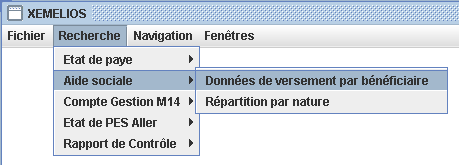
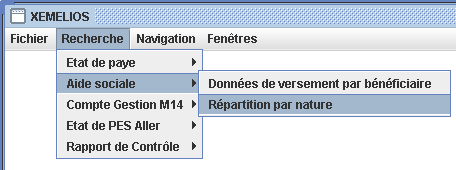

Aide sociale
L'Aide sociale regroupe les Versements, Répartitions par nature.
L'état de Versements regroupe les versements d'aide sociale.
On accède aux recherches sur Données de versement par bénéficiaire par le menu Recherche / Aide sociale / Données de versement par bénéficiaire

Ces recherches renvoient toujours une liste de Données de versement par bénéficiaire
Les critères de recherche possibles sont :
Permet de filtrer par année de versement.
Permet de filtrer par prestation principale de l'état de versement.
Permet de filtrer par prestation du versement.
Permet de filtrer par identifiant du destinataire.
Permet de filtrer par type de destinataire.
Permet de filtrer par catégorie de destinataire.
Permet de filtrer par code postal de destinataire.
Permet de filtrer par ville de destinataire.
Permet de filtrer par nom de destinataire.
Permet de filtrer par identifiant de bénéficiare.
Permet de filtrer par type de bénéficiare.
Permet de filtrer par catégorie de bénéficiare.
Permet de filtrer par code postal de bénéficiare.
Permet de filtrer par ville de bénéficiare.
Permet de filtrer par nom de bénéficiare.
Permet de filtrer par identifiant de famille de bénéficiare.
Permet de filtrer par date de naissance de bénéficiare.
Permet de filtrer par identifiant de versement.
Permet de filtrer par RIB
Permet de filtrer par date de versement.
Permet de filtrer par identifiant de dossier.
Permet de filtrer par nature de décision.
Permet de filtrer par date de décision.
Permet de filtrer par date d'effet de décision.
Permet de filtrer par date de fin d'effet de décision.
Permet de filtrer par identifiant de décision.
Permet de filtrer par pièce justificative (décision).
Permet de filtrer par service.
Permet de filtrer par numéro de mandat.
Permet de filtrer par code nature.
Permet de filtrer par budget.
Permet de filtrer par cade fonction.
On accède aux recherches sur Répartition par nature par le menu Recherche / Aide sociale / Répartition par nature

Ces recherches renvoient toujours une liste de Répartition par nature
Les critères de recherche possibles sont :
Permet de filtrer par année.
Permet de filtrer par code fonction.
Permet de filtrer par budget.